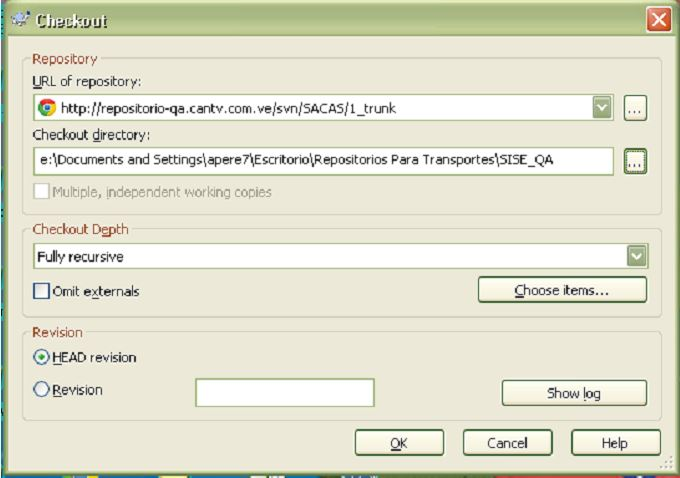

Transporte CORE
Pasos Iníciales si no tiene la carpeta (Repositorios Para Transporte) en el escritorio.1) Checkout SVN
· En el escritorio deberá crear una carpeta de nombre: Repositorios Para Transportes · Dentro de esa carpeta unas sub carpeta de nombre: SACAS_DES y SACAS_QA · Dar click derecho en cualquier parte del escritorio
· Para copiar la de desarrollo seria así:
· Para realizar el CHECKOUT que copiar Elemento en carpeta de QA seria así: 
Pasos Para realizar Transporte. 2) En el Escritorio del PC. · Dar doble click en carpeta (Repositorio Para Transporte) · En la sub-carpeta ( SACAS_DES ) dar click derecho SVN UPDATE · En la sub-carpeta ( SACAS_QA ) dar click derecho SVN UPDATE · Luego dentro de la sub-carpeta ( SACAS_QA ) · Crear una carpeta 2014-N0004455314 · Dentro de la Anterior Crear sub-carpetas SacasWeb o SacasCore · Copiar Manualmente los elementos solicitados · Realizar el ADD y COMMIT · Copiar MANUALMENTE los elementos a transportar en la ruta /home/UsuariodeRed/TRANSPORTE · Según sea el caso SacasCore ir al Paso 3 3) Entrar en PUTTY · Usuario de Red · su - jbst02 y te pedirá el password(Cantvxxxx) · Luego colocas m y se activara el menú Estas son las rutas hacia el ASACALINC01: Si es *.jar /tcantv/appl/jbst02/jboss-5.1.0.GA/server/ports-02/lib Si es *.properties /tcantv/appl/jbst02/jboss-5.1.0.GA/server/ports-02/conf Si es *.aar /tcantv/appl/jbst02/jboss-5.1.0.GA/server/ports-02/deploy/axis2.war/WEB-INF/services Pasos por Menú SacasCore: (ASACALINC01) (IP=10.1.192.4) Tipos: (.jar) - (.properties) - (.aar) [a] apere7 ................... [b] eriosg01................... [b] dquiro ................... [d] omarin ................... [e] ogarc3 ................... [f] mvega1 ................... [g] crinco ................... [h] cmont3 ................... [i] lgarci19................... [2] ............................ Muestra Elementos que se encuentran en la carpeta:/home//TRANSPORTE [3] ............................ Copia archivos a las rutas que corresponda (ASACALINC01) [4] ............................ Activa el JBOSS SERVIDOR (ASACALINC01) [5] ............................ Reporte de Transporte Realizado en (ASACALINC01) y enviado por Mail [6] ............................ Muestra Los Pasos Para Realizar Transportes La ultima Opcion realizada fue : [9] ............................ Salir ======================= -n Entre la opcion [1-9]: Nota: El paso 4 genera el archivo para el paso5 (CopiaCore) Formulario Para Transporte SVN Aplicación: Sacas-Web Wsacalinc01 - tipo: Instalación - IR - Nivelación - Otros - Requerimiento O Tiquet: Nro. 4455314 - Repositorio Origen: http://repositorio-des.cantv.com.ve/svn/SACAS/tags/Transporte/SacasWeb/ - Repositorio Destino: http://repositorio-qa.cantv.com.ve/svn/SACAS/tags/Transporte/SacasWeb/ - Ruta: /tcantv/appl/jbst02/jboss-5.1.0.GA/server/ports-02/conf - Nombre: Auditoria. properties - Revisión: 499 Observaciones: Si se realiza por paquete o carpeta la revisión será una sola. Formulario Para Transporte SVN Aplicación: Sacas-Core Asacalinc01 - tipo: Instalación - IR - Nivelación - Otros - Requerimiento O Tiquet: - Repositorio Origen: http://repositorio-des.cantv.com.ve/svn/SACAS/tags/Transporte/SacasCore/ - Repositorio Destino: http://repositorio-qa.cantv.com.ve/svn/SACAS/tags/Transporte/SacasCore/ - Ruta: - Nombre: - Revisión: Observaciones: Si se realiza por paquete o carpeta la revisión será una sola. En el caso de solicitar el log del portal En el caso de solicitar el log del portal EN LA RUTA: /tcantv/appl/jbst02/jboss-5.1.0.GA/server/ports-02/log Lista las ultimas 100 líneas del Log tail -n 100 server.log Escribir la última parte del archivo a medida que va creciendo. Esta opción es muy útil para monitorear archivos de registro que van creciendo con el tiempo. tail -f server.log Para eliminar temporales en sacas • Bajar el servicio jbst02 • Luego en la ruta cd /tcantv/appl/jbst02/jboss-5.1.0.GA/server/ports-02/tmp cd /tcantv/appl/jbst02/jboss-5.1.0.GA/server/ports-02/work • luego dar el comando: rm -r * • Activar el servicio jbst02 NOTAS DEL MENU SACAS • En el programa menucore.sh y menuweb.sh • se genera un archivo tempcore.txt y tempweb.txt para los programas copiaweb.sh y copiacore.sh • El cual se elimina cada vez que corres el copiaweb.sh y copiacore.sh Se le deberá colocar a cada usuario de sacas chmod 766 en el directorio /home/nombre_usuario_red/ Para consulta y Reset de usuarios con el usuario admqa en sacas Sudo -l sudo /usr/bin/faillog -a sudo /usr/bin/faillog -r En caso de que al dar svn update de este mensaje: [jbst02@wsacalinc01]:/tcantv/appl/jbst02/svn_sacas_qa/Requerimientos>svn update svn: Working copy '.' locked svn: run 'svn cleanup' to remove locks (type 'svn help cleanup' for details) Utilizar este comando: svn cleanup